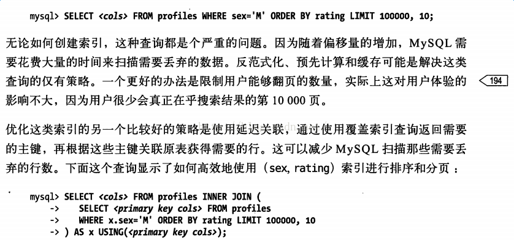

mysql优化之大数据量分页优化
limit 及翻页优化
分页以及分页性能问题
使用sql实现分页是一件非常简单的事情，如下:
1 | select * from test_shop limit offset,N |
但是，当偏移量offset非常大时，效率极低，原因如下:
mysql并不是跳过offset行,然后单取N行,而是取offset+N行,返回放弃前offset行,返回N行.效率较低,当offset越大时,效率越低
分页优化
业务上解决
最简单的方法，限制页的最大值
不用offset，用条件来查询
如下所示:
1 | select id,name from lx_com limit 5000000,10; |
可按照条件查询
1 | select id,name from lx_com where id>5000000 limit 10 |
按条件来查询的话可能会出现下列问题：
2次的结果不一致
原因: 数据被物理删除过,有空洞.
解决: 数据不进行物理删除(可以逻辑删除).
最终在页面上显示数据时,逻辑删除的条目不显示即可.
(一般来说,大网站的数据都是不物理删除的,只做逻辑删除 ,比如 is_delete=1)
索引延迟
如高性能mysql中提到的解决方法
